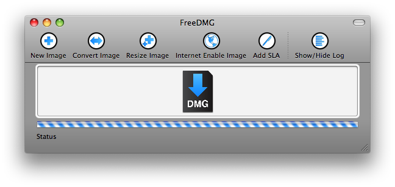

Interface
Main window
The main window for FreeDMG has been designed to be as basic as possible. A toolbar provides easy access to commonly used disk image operations with the click of the mouse. The large drop zone in the center of the window provides a large target for users to drag-and-drop their files, folders, and volumes.

The large progress bar and status field make it simple to determine where the application is in the imaging process
Preferences
Toolbar
Utility panel
Log view
Options view
Creating disk images
Drag and Drop
To use the software in it's most basic form (creating a disk image on the fly):
Step 1:
Drag files and/or folders to the FreeDMG window, or to the FreeDMG icon in the dock.
Step 2:
When the window or icon shades, drop your files and/or folders
The disk image will be created in the same folder as the source file/folder if the "Image on fly" option is chosen in preferences.
Open
Users can create disk images by selecting "Open" from underneath the "File" menu. When selecting a file or folder, the program will automatically create a disk image of the specified type (from Preferences), prompting the user for a location if necessary.
A preference can be made to set the action to be taken on the opening of an ISO or Disk Image. This includes mounting (the default), burning, converting, verifying, and other options.
Open on launch
Users can open FreeDMG by dropping a file or folder on top of the FreeDMG icon (either in the Finder, or from the Dock). The software also has the ability to quit after opening on launch - this makes it convenient to use FreeDMG as a disk image "droplet" - opening up to image the provided items, and quitting to keep system memory use low.
New blank images
FreeDMG can create new UDIF (read/write) or SPARSE (expandable read/write) images of a specified size. Users can invoke this command under File -> New. Mac OS 10.5 introduces the ability to save disk images as "sparsebundles", which are the recommended sparsetype for that platform. Sparsebundles are not available in Mac OS X v.10.3 or 10.4.
Users can specify an image's volume name when creating images from scratch. The default volume name can be specified in Preferences for custom naming when other imaging methods are used.
Creating new images allows a custom volume format to be used. This may not be recommended, depending on your use. To create cross-platform images, the "Make Hybrid" option should be chosen from underneath the "Images" menu. See the Make Hybrid section below.
Image from folder
The best way to create custom disk images is to use the "Image from Folder" command from underneath the "Images" menu. Please note that this command be used to image folders as well as volumes. It may be recommended to use the "Image from Device" option when creating images from bootable disks, but "Image from Volume" (which uses Image from Folder) can be just as effective (and will preserve permissions).
Scrub image
When a disk image is created, certain Finder attributes, stored in the '.DS_Store' file are removed. This is called "scrubbing" of the image. This is done to eliminate the amount of personal information that is disclosed (in invisible files!!!) when creating electronic media that may be publicly distributed. This can also eliminate some attributes that user wish to preserve. The default is to scrub images - this feature can be disabled in FreeDMG preferences.
Image from Volume
This command creates a disk image from a volume or other mounted disk. The "Image from Folder" command is actually used for this function. Permissions should be preserved when using either method.
Image from Device
Image from device may be the most comprehensive disk image function - this should preserve the partition map of the device specified. All permissions should be preserved, as this image is done by block copy.
Limit segments to size
The "Limit segments to size" preference is only available with the "Image from Device" command. For some reason, this option is specified for both device/folder imaging, but only works on devices (in 10.4 - not tested in 10.5).
Converting disk images
Image formats
UDRW - UDIF read/write image
UDRO - UDIF read-only image
UDCO - UDIF ADC-compressed image
UDZO - UDIF zlib-compressed image
UDBZ - UDIF bzip2-compressed image (OS X 10.4+ only)
UFBI - UDIF entire image with MD5 checksum
UDRo - UDIF read-only (obsolete format)
UDCo - UDIF compressed (obsolete format)
UDTO - DVD/CD-R master for export
UDxx - UDIF stub image
UDSP - SPARSE (grows with content)
UDSB - SPARSEBUNDLE (grows with content; bundle-backed)
RdWr - NDIF read/write image (deprecated)
Rdxx - NDIF read-only image (Disk Copy 6.3.3 format)
ROCo - NDIF compressed image (deprecated)
Rken - NDIF compressed (obsolete format)
DC42 - Disk Copy 4.2 image
In addition to the compression offered by some formats, the
UDIF and NDIF read-only formats completely remove unused space
in HFS and UFS filesystems. For UDZO, the zlib compression level can be spec-
ified. The default compression level is 1 (fastest).
Image modification
Resize
Resize a disk image or the containers within it. Given a
read/write partitioned UDIF, if the last partition is
Apple_HFS, attempt to resize the partition to the end of the
image, or to the last used block in the embedded HFS/HFS+
filesystem (depending on size_spec). On older systems, resize
was limited to pre-defined limits that depended on how the
filesystem was created. As of OS X 10.4, resize can be used
to grow an HFS filesystem within an image to any size sup-
ported by HFS and the filesystem hosting the image.
resize is often used when a device image needs to be shrunk so
that the HFS/HFS+ partition can be converted to CD-R/DVD-R
format and still be burned. Note that gaps cannot be
reclaimed as resize does not move data. -fsargs can sometimes
be used to minimize filesystem-generated gaps. resize can
grow a filesystem and image within the bounds of the image and
filesystem formats (e.g. roughly 2^63 bytes for HFS+ inside of
a UDRW on HFS+).
Compress
Scans the bands of a sparse (SPARSE or SPARSEBUNDLE) disk
image containing an HFS filesystem, removing those parts of
the image which are no longer being used by the filesystem.
Depending on the location of files in the hosted filesystem,
compact may or may not shrink the image. For SPARSEBUNDLE
images, completely unused band files are simply removed.
Change password
Change the passphrase for an encrypted image. The image must have
encryption applied or the operation will result in error. To apply encryption, convert the image (even to the same type), and add encryption.
Burn
Burn image to optical media in an attached burning device. In
all cases, a prompt for media will be printed once an appro-
priate drive has been found.
Segment
Segment a NDIF or UDIF disk image. Segmented images work
around limitations in file size which are sometimes imposed by
filesystems, network protocols, or media. Note: whether or
not the segments are encrypted is determined by the options
passed to segment and not by the state of the source image.
Make Hybrid
Generate a potentially-hybrid filesystem in a read-only disk
image using the DiscRecording framework's content creation
system.
source can either be a directory or a disk image. The gener-
ated image can later be burned using burn, or converted to
another read-only format with convert. By default, the
filesystem will be readable on most modern computing plat-
forms. The generated filesystem is not intended for conver-
sion to read/write, but can safely have its files copied to a
read/write filesystem by ditto(8) or asr(8) (in file-copy
mode).
hdiutil supports generating El Torito-style bootable ISO9660
filesystems, which is commonly used for booting x86-based
hardware. The specification includes several emulation modes.
By default, an El Torito boot image emulates either a 1.2MB,
1.44MB, or 2.88MB floppy drive, depending on the size of the
image. Also available are "No Emulation" and "Hard Disk
Emulation" modes, which allow the boot image to either be
loaded directly into memory, or be virtualized as a parti-
tioned hard disk, respectively. The El Torito options should
not be used for data CDs.
Add SLA
Add software license agreements to the resource fork of the
selected image. Software license agreements (SLAs) allow creators of
disk images to force and end user to agree or disagree to a license
before gaining access to software or materials. This can guarantee
that anyone opening the image will be held to the specified terms
and conditions.
Flatten
Flatten a read-only (or compressed) UDIF disk image into a
single-fork file. By default, metadata will be stored both as
XML (for the kernel's use) and in an embedded resource fork
(for OS X 10.1 and earlier). Note: UDBZ is not supported in-
kernel.
Unflatten
Unflatten a UDIF disk image, creating a dual-fork file in tra-
ditional format (resource-only; no XML). If the resource fork
representation of the metadata becomes greater than 16 MB, the
operation will fail with error -39 ("End of fork").
Get Info
Print out information about a disk image.
Verify
Compute the checksum of a read-only (or compressed) image, and
verify it against the value stored in the image.
Checksum
Calculate the specified checksum on the image data, regardless
of image type.
Type is one of:
UDIF-CRC32 - CRC-32 image checksum
UDIF-MD5 - MD5 image checksum
DC42 - Disk Copy 4.2
CRC28 - CRC-32 (NDIF)
CRC32 - CRC-32
MD5 - MD5
SHA - SHA
SHA1 - SHA-1
SHA256 - SHA-256
SHA384 - SHA-384
SHA512 - SHA-512
Make Internet Enabled
Enable or disable post-processing for the image. Without
arguments, IDME will be enabled. If so enabled, upon first
encounter with Disk Copy (on OS X 10.2.3+) or a browser using
the feature for a download on OS X 10.3, the image will have
its visible contents copied into the directory containing the
image and the image will be put into the trash with IDME
turned off.
An internet enabled disk image allows web browsers such as Safari
to automatically mount downloaded disk images, copy the image's contents
to the location that it was downloaded to, moving the image to the trash afterwards.
Scan for block restore
See "Scan for restore"
Scan for restore
This option prepares an image for block restore using "asr" or other tools in 10.4. In 10.3, the "Scan Image for Block Restore" must be chosen for block copy restore, and "Scan Image for Restore" to prepare the image for file copy restore.
Software License Agreements
Creating SLAs
To create or edit software license agreements, use the SLA window/panel. This can be opened from underneath "Window" -> "Software License Agreements". In SLA pane, you can add Software License agreements to the table view at the top of the screen by clicking the "+" button. Give the SLA a human-readable name, and select the license's locality. The SLA's ID will be set depending upon the localization or language chosen. The order that localized licenses are displayed get derived from a user's "International" system preference settings*.
Modifying SLAs
To modify a Software License Agreement, select the license that you'd like to modify from the table at the top of the SLA pane. The current license should display in the text field below. Make your modifications, tab out of the license text field, or select another license to save the changes. Changes are also saved when the "OK" button or "Add to Image" button are selected.
Removing SLAs
SLAs can be removed from the FreeDMG SLA window by selecting the license, and clicking the "-" button inside the SLA panel.
To remove and SLA from a disk image, the image must be converted to a read-write format, and then back into a compressed/read-only format.
SLA languages
The current list of languages available for Software License Agreements in FreeDMG are as follows:
German
English
Spanish
French
Italian
Japanese
Dutch
Swedish
Brazilian Portugese
Simplified Chinese
Traditional Chinese
Danish
Finnish
French Canadian
Korean
Norwegian
*If an SLA is not available for a particular language, please contact me, and I will attempt to get your language added.